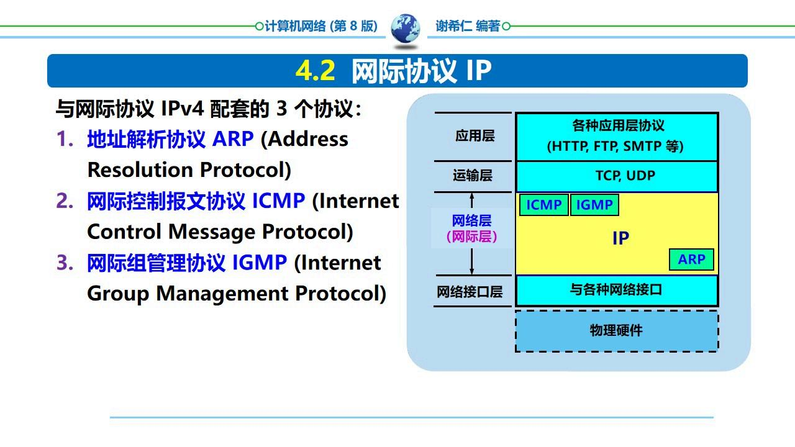

本章核心问题：如何将分组从源主机通过多个网络（路由器）传送到目的主机？
在计算机网络领域，网络层应该向运输层提供怎样的服务曾引起长期争论。争论的实质是：可靠交付应当由网络还是端系统负责？
| 方式 | 特点 | 代表 |
|---|---|---|
| 虚电路服务 | 面向连接，提供可靠交付，网络层保证 | ATM、帧中继 |
| 数据报服务 | 无连接，尽最大努力交付，端系统保证 | Internet (IP) |
Internet 采用数据报服务——IP 协议提供无连接的、尽最大努力交付的服务。可靠传输由端系统的 TCP 保证。

IP 地址——32 位（IPv4），全球唯一标识符，由网络号和主机号组成。
分类的 IP 地址：
| 类别 | 网络号位数 | 首字节范围 | 最大网络数 | 每网最大主机数 |
|---|---|---|---|---|
| A | 8 (实际7) | 1~126 | 126 | 16,777,214 |
| B | 16 (实际14) | 128~191 | 16,384 | 65,534 |
| C | 24 (实际21) | 192~223 | 2,097,152 | 254 |
| D | 224~239，多播地址 | |||
| E | 240~255，保留 | |||
易错：A类地址的网络号为 8 位，但第一位固定为 0，所以可用的网络号只有 7 位 = 126 个。127.x.x.x 是环回地址。
为什么要划分子网？IP 地址空间利用率低 + 路由表膨胀。划分子网可以将一个大的网络划分成若干较小的网络。
子网掩码——32 位，网络号和子网号对应的位为 1，主机号对应的位为 0。
$$\\text{网络地址} = \\text{IP 地址} \\; \\& \\; \\text{子网掩码}$$
例如：IP 141.14.72.24，子网掩码 255.255.192.0 → 网络地址 = 141.14.64.0
易错：子网掩码中的 1 必须连续（从最高位开始）。255.255.1.0 这样不连续的掩码在实际中很少使用。
CIDR (Classless Inter-Domain Routing)——消除传统 A、B、C 类地址界限，使用「网络前缀」来指定网络部分。
记法：IP地址/前缀长度，如 192.168.1.0/24 表示前 24 位是网络前缀。
CIDR 关键概念：

IPv4 数据报首部：
| 字段 | 位数 | 说明 |
|---|---|---|
| 版本 | 4 | IPv4 = 4 |
| 首部长度 | 4 | 以 4 字节为单位，最小 5（20字节） |
| 区分服务 | 8 | QoS 标记 |
| 总长度 | 16 | 首部+数据，最大 65535 字节 |
| 标识 | 16 | 分片重组标识 |
| 标志 | 3 | DF（不分片）/ MF（更多分片） |
| 片偏移 | 13 | 以 8 字节为单位 |
| TTL | 8 | 跳数限制，每路由器减 1 |
| 协议 | 8 | 上层协议：6=TCP, 17=UDP, 1=ICMP |
| 首部检验和 | 16 | 仅检验首部 |
| 源/目的地址 | 各32 | IPv4 地址 |
为什么分片？不同网络的 MTU 可能不同，IP 数据报在转发时可能需要在路由器处分片。
关键字段：标识（同一数据报各分片相同）、标志（DF=1 禁止分片，MF=1 还有后续分片）、片偏移（本分片在原数据报中的相对位置，以 8 字节为单位）。
易错：片偏移以 8 字节为单位，所以分片的数据部分长度必须是 8 的倍数（最后一个分片除外）。
定长子网划分——所有子网使用相同的子网掩码。
变长子网划分 VLSM——不同子网可使用不同长度的子网掩码，更灵活高效。
从主机号中借 $n$ 位作为子网号 → $2^n$ 个子网（减去全 0 和全 1）。
| 类型 | 协议 | 算法 | 特点 |
|---|---|---|---|
| IGP 内部网关 | RIP | 距离向量 | 跳数最多 15，仅适用小型网络 |
| IGP 内部网关 | OSPF | 链路状态 | Dijkstra 算法，收敛快，适用大型网络 |
| EGP 外部网关 | BGP-4 | 路径向量 | 互联网域间路由标准 |
RIP (Routing Information Protocol)——基于距离向量的分布式路由协议，以跳数为度量。
OSPF (Open Shortest Path First)——基于链路状态的内部网关协议。使用 Dijkstra 最短路径算法。
是什么？ARP 将 IP 地址解析为 MAC 地址。
为什么需要？数据链路层需要 MAC 地址来封装帧，但上层只知道目的 IP 地址。ARP 在广播域内广播「谁的 IP 是这个？」，拥有该 IP 的主机回复自己的 MAC 地址。
ARP 缓存：将解析结果缓存一段时间（通常 20 分钟），避免重复发送 ARP 请求。
ICMP——IP 层的辅助协议，用于传递差错报告和查询信息。常用类型：
易错：IPv6 地址不是 IPv4 的简单扩容。IPv6 还改变了首部格式，添加了流标签（Flow Label）支持 QoS，并移除了检验和。重点